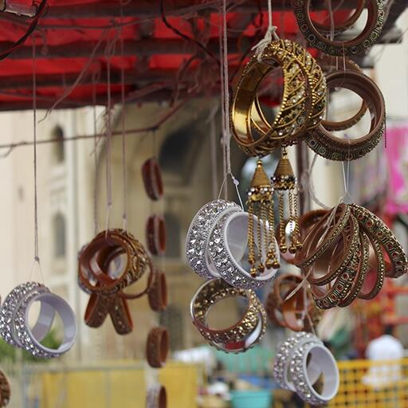

Laad Bazaar is a very old market popular for bangles. It is located on one of the four major thoroughfares emerging from the historic Charminar. In a more than one-kilometer long shopping strip, there are many shops selling bangles, wedding related items and saris. Hyderabad is also famous for pearls.Malls are a huge attraction in big cities. They provide great recreation and facilitates that long-pending fam-jam. Hyderabad is one of the biggest and tech-forward cities of Telangana. A vacation spot for many tourists and the residence of many Telugu film stars, Hyderabad has always been perceived to be one of the poshest cities in Telangana and Andhra Pradesh. The other parts of the state like Pochampally Gadwal, Kothakota, Naryanpet are famous for saris. The Pochampally Ikkat saris are world famous. Many modern outlets for silk saris and ethnic wear are also housed in Hyderabad. Cheriyal village, in Jangaon district, is famous for its paintings and Pemberthi village is for brassware. Nirmal is famous for paintings, toys, furniture and bidriware is for Hyderabad. Silver filigree of Karimnagar, dokra metal crafts of Adilabad are the other interesting souvenirs for shopping in the state.